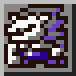
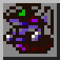
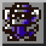

城鎮設施／競技場／繁榮度
 繁榮度追蹤器
繁榮度追蹤器
招募規則：成長期 +1、成熟期 +2、完全體 +3；鼻涕蟲獸、大便獸、亞伯獸（汙穢型）只 +1。按呢個規則，全部 50 隻加埋＝100 點（同 Neve FAQ「最多 100」一致）。
⚠️ 衝突：dw1-device 網站將青蛙獸計 0 點、總數 93；按以上兩個公開來源嘅規則，青蛙獸（成熟期）應該係 +2，總數先會係 100。
剔選已招募嘅數碼暴龍（儲存喺你部機嘅瀏覽器 localStorage，唔會上傳）：
里程碑
- 6：浮球獸（起始之城北面）話你知偉大峽谷入口有隱形橋
- 8：浮球獸話你知偉大峽谷上層有山賊（食人鬼獸）
- 10：花仙獸入城後同城入面嘅種子獸傾偈 → 熱帶雨林出現鼻屎獸
- 15：同公公獸傾完出門，暴龍獸挑戰 → 開競技場
- 30：已招貝殼獸：讀第 2 份報紙（外星人獸事件第一步）
- 35：⚠️ 巴哈姆特：讀第 6 份報紙 → 吸血魔獸失蹤（骷髏暴龍獸事件）；HeroesAndCons 寫 40
- 40：⚠️ HeroesAndCons：骷髏暴龍獸事件（巴哈姆特寫 35）
- 45：獅子獸（鑽頭隧道最南 → 祖先洞窟石板）、外星人獸（第三次麥田圈）
- 50：飛龍獸挑戰（開放無限山）；堅定森林樹幹門猩猩獸
📎 參考：HeroesAndCons – Recruitment Guide（GameFAQs 招募指南） ｜ 巴哈姆特 – 數碼寶貝大冒險 攻略（振興流程、道具一覽、中文版譯名） ｜ Neve – Digimon World 攻略 FAQ（VGM PDF 鏡像） ｜ ⚠️ 對照用：dw1-device.github.io/dw1（只用嚟核對；淨係呢度有嘅資料會標 ⚠️）
 商店 & 營業時間
商店 & 營業時間
小商店
招到 比達獸或者
比達獸或者 西拉獸就開門：
西拉獸就開門： 回復磁片、
回復磁片、 ＭＰ磁片、
ＭＰ磁片、 肉；兩隻都招到再加
肉；兩隻都招到再加 中回復磁片、
中回復磁片、 各樣磁片、
各樣磁片、 自動駕駛員。
自動駕駛員。
大商店（招到任何一位店長即刻變大商店）
基本貨品： 回復磁片、
回復磁片、 中回復磁片、
中回復磁片、 ＭＰ磁片、
ＭＰ磁片、 各樣磁片、
各樣磁片、 攻擊插件、
攻擊插件、 防禦插件、
防禦插件、 高速插件、
高速插件、 自動駕駛員、
自動駕駛員、 攜帶式廁所、
攜帶式廁所、 肉。2–3 位店長加
肉。2–3 位店長加 大回復磁片、
大回復磁片、 中ＭＰ磁片、
中ＭＰ磁片、 雙重磁片；4 位加
雙重磁片；4 位加 大ＭＰ磁片、
大ＭＰ磁片、 再生磁片。3 位或以上店長有卡片販賣機。
再生磁片。3 位或以上店長有卡片販賣機。
秘密商店（大商店地庫）
| 店長 | 時間 | 貨品 |
|---|---|---|
| 00:00–06:00 | ||
| 06:00–12:00 | ||
| 12:00–18:00 | ||
| 18:00–00:00 |
 精靈獸：入城後每次入大商店有 10% 機會出現，賣
精靈獸：入城後每次入大商店有 10% 機會出現，賣 訓練手冊 50,000 點數。⚠️ 喺「買／唔買」用 △ 取消會觸發程式錯誤，繁榮度會被改寫成「日數−1」。
訓練手冊 50,000 點數。⚠️ 喺「買／唔買」用 △ 取消會觸發程式錯誤，繁榮度會被改寫成「日數−1」。 猩猩獸：入城後喺數碼大橋賣
猩猩獸：入城後喺數碼大橋賣 黃金香蕉（50,000 點數，直接進化成猩猩獸）。
黃金香蕉（50,000 點數，直接進化成猩猩獸）。 金屬香蕉正常玩法攞唔到。
金屬香蕉正常玩法攞唔到。- 肉田：每日攞 3 份（10% 有 5 份）。種子獸＝
 肉；花仙獸＝
肉；花仙獸＝ 巨大肉（另外賣 500 點數）；鼻屎獸＝
巨大肉（另外賣 500 點數）；鼻屎獸＝ 極品肉（另外賣
極品肉（另外賣 挑戰胡蘿蔔、
挑戰胡蘿蔔、 櫻花鳥蘿蔔各 500）。
櫻花鳥蘿蔔各 500）。  道具銀行（亞古獸）：每種道具最多存 99 個。
道具銀行（亞古獸）：每種道具最多存 99 個。 診所（半人馬獸）：
診所（半人馬獸）： 藥貼布 400、
藥貼布 400、 藥物 1200；休息 1 個鐘疲勞 −20；醫病／受傷 300 點數（冇錢就免費），疲勞降到 50。
藥物 1200；休息 1 個鐘疲勞 −20；醫病／受傷 300 點數（冇錢就免費），疲勞降到 50。
📎 參考：SydMontague & Ginoshie – Digimon World 機制文件（Google Docs）
餐廳（廚師 & 時間）
招到任何一位廚師就開餐廳，供應嘅菜式跟當時當值嘅廚師。
 加魯魯獸｜00:00–06:00
加魯魯獸｜00:00–06:00
| 菜式 | 價錢 | 飽肚 | ||||||||||
|---|---|---|---|---|---|---|---|---|---|---|---|---|
| 丁骨牛扒 T-Bone Steak | 10 | 1 | 1000 | 30 | 3 | -5 | 0 | 1 | ||||
| 豪華牛扒 Dx-Steak | 30 | 2 | 2500 | 40 | 4 | -5 | 1 | 2 | ||||
| 幻影牛扒 Phantom Steak | 50 | 3 | 5000 | 50 | 5 | -5 | 2 | 3 |
 巨龍獸｜06:00–12:00
巨龍獸｜06:00–12:00
| 菜式 | 價錢 | 飽肚 | ||||||||||
|---|---|---|---|---|---|---|---|---|---|---|---|---|
| 龍麵 Dragon Noodle | 10 | 1 | 1 | 400 | 18 | 2 | -5 | 2 | 0 | |||
| 恐龍薄餅 Zaurus Pizza | 30 | 3 | 2 | 1000 | 28 | 3 | -5 | 4 | 0 | |||
| 巨無霸漢堡 J. Burger | 50 | 5 | 3 | 2500 | 35 | 4 | -5 | 8 | 1 |
 火焰獸｜12:00–18:00
火焰獸｜12:00–18:00
| 菜式 | 價錢 | 飽肚 | ||||||||||
|---|---|---|---|---|---|---|---|---|---|---|---|---|
| 紅色拉麵 Red Ramen | 1 | 1 | 400 | 20 | 2 | -5 | 2 | 0 | ||||
| 辣咖喱 Hot Curry | 3 | 2 | 1200 | 26 | 3 | -5 | 4 | 0 | ||||
| 火鍋 Hot Pot | 5 | 3 | 3500 | 20 | 4 | -5 | 6 | 1 |
 雪人獸｜18:00–00:00
雪人獸｜18:00–00:00
| 菜式 | 價錢 | 飽肚 | ||||||||||
|---|---|---|---|---|---|---|---|---|---|---|---|---|
| 雪花奶昔 Snow Shake | 10 | 1 | 300 | 12 | 2 | -2 | 3 | 0 | ||||
| 雪糕 Ice Cream | 30 | 2 | 700 | 16 | 3 | -2 | 5 | 0 | ||||
| 刨冰 Snow Cone | 50 | 2 | 1600 | 20 | 4 | -2 | 7 | 1 |
 外星人獸｜20% 機會出現
外星人獸｜20% 機會出現
| 菜式 | 價錢 | 飽肚 | ||||||||||
|---|---|---|---|---|---|---|---|---|---|---|---|---|
| 太空沙律 Space Salad | 10 | 10 | 1 | 1 | 1 | 1 | 1500 | 20 | 0 | -5 | 1 | 1 |
| UFO 湯 UFO Soup | 20 | 20 | 2 | 2 | 2 | 2 | 4000 | 30 | 1 | -5 | 2 | 2 |
| 銀河套餐 Galaxy Course | 30 | 30 | 3 | 3 | 3 | 3 | 9000 | 45 | 5 | -5 | 3 | 3 |
 蛋蛋獸｜10% 機會出現
蛋蛋獸｜10% 機會出現
菜式能力有 3 種結果（買嗰陣各 33%）。⚠️ 程式錯誤：唔肚餓時唔會重新擲，可以重複食同一個結果。
結果 1
| 菜式 | 價錢 | 飽肚 | ||||||||||
|---|---|---|---|---|---|---|---|---|---|---|---|---|
| 烚蛋 Boiled Egg | 10 | 1 | 1 | 1000 | 18 | 1 | -5 | 1 | 0 | |||
| 奄列 Omelet | 20 | 2 | 2 | 2500 | 24 | 2 | -5 | 2 | 0 | |||
| 滑蛋飯 Egg Bowl | 30 | 3 | 3 | 6000 | 36 | 3 | -5 | 3 | 1 |
結果 2
| 菜式 | 價錢 | 飽肚 | ||||||||||
|---|---|---|---|---|---|---|---|---|---|---|---|---|
| 烚蛋 Boiled Egg | 10 | 1 | 1 | 1000 | 18 | 1 | -5 | 1 | 0 | |||
| 奄列 Omelet | 20 | 2 | 2 | 2500 | 24 | 2 | -5 | 2 | 0 | |||
| 滑蛋飯 Egg Bowl | 30 | 3 | 3 | 6000 | 36 | 3 | -5 | 3 | 1 |
結果 3
| 菜式 | 價錢 | 飽肚 | ||||||||||
|---|---|---|---|---|---|---|---|---|---|---|---|---|
| 烚蛋 Boiled Egg | 20 | 20 | 2 | 2 | 2 | 2 | 1000 | 18 | 1 | -5 | 2 | 1 |
| 奄列 Omelet | 30 | 30 | 3 | 3 | 3 | 3 | 2500 | 24 | 2 | -5 | 3 | 1 |
| 滑蛋飯 Egg Bowl | 40 | 40 | 4 | 4 | 4 | 4 | 6000 | 36 | 3 | -5 | 4 | 3 |
📎 參考：SydMontague & Ginoshie – Digimon World 機制文件（Google Docs）
巴多拉運輸、巨鯨獸渡輪
| 目的地 | 價錢（點數） | 解鎖條件 |
|---|---|---|
| 偉大峽谷（巴多拉獸鳥巢） | 1000 | 招募咗巴多拉獸 |
| 齒輪莽原 | 1000 | 發現齒輪莽原嘅回收店 |
| 古代秘境入口 | 1500 | 入過時急域 |
| 冰結凍土 | 2000 | 入過冰結凍土廁所北面嘅分岔畫面 |
| 朦朧群樹 | 2500 | 同樹人獸傾過偈 |
| 甲蟲島 | 2500 | 同海龍獸做咗朋友 |
 巴多拉獸唔會飛返起始之城。
巴多拉獸唔會飛返起始之城。 巨鯨獸入城後喺階乘鎮 ↔ 秘密海岸洞之間接載。
巨鯨獸入城後喺階乘鎮 ↔ 秘密海岸洞之間接載。
📎 參考：SydMontague & Ginoshie – Digimon World 機制文件（Google Docs）
冰壺 & 尋寶
數碼冰壺（企鵝獸；每局 1 條魚）
| 對手 | 獎品（機率） |
|---|---|
 尋寶（鑽地獸）
尋寶（鑽地獸）
3 日 1,000 點數；10 日 5,000 點數。俾錢嗰刻已經決定咗獎品（可以讀檔重抽）。招到加布獸會大幅提升好貨機會。
| 方案 | 獎品（機率） |
|---|---|
| 3 日（冇加布獸） | |
| 3 日（有加布獸） | |
| 10 日（冇加布獸） | |
| 10 日（有加布獸） |
📎 參考：SydMontague & Ginoshie – Digimon World 機制文件（Google Docs）
競技場
暴龍獸入城後開放。每日有唔同杯賽，只限合資格嘅數碼暴龍參加。參加太低級別嘅杯賽有 30% 機會降馴獸師等級。參加獎： 巨大肉。
巨大肉。
獎品
| 杯賽 | 代號 | 冠軍獎品 | 冠軍獎金 | 亞軍獎品 | 亞軍獎金 | 馴獸師升級機會 |
|---|---|---|---|---|---|---|
| 成長期杯 | D | 2000 | 500 | — | ||
| 成熟期杯 1 | C | 4000 | 1000 | — | ||
| 成熟期杯 2 | B | 6000 | 2000 | 10% | ||
| 完全體杯 | A | 8000 | 3000 | 20% | ||
| 超級杯 | S | 10000 | 4000 | 30% | ||
| 超級杯 | S | 10000 | 4000 | 30% | ||
| 超級杯 | S | 10000 | 4000 | 30% | ||
| 版本 1 杯 | H | 5000 | 2000 | — | ||
| 版本 2 杯 | I | 5000 | 2000 | — | ||
| 版本 3 杯 | J | 5000 | 2000 | — | ||
| 版本 4 杯 | K | 5000 | 2000 | — | ||
| 版本 0 杯 | L | 5000 | 2000 | — | ||
| 火炎杯 | F | 8000 | 3000 | — | ||
| 格鬥杯 | G | 8000 | 3000 | — | ||
| 雷電杯 | W (T) | 8000 | 3000 | — | ||
| 冰冷杯 | O | 8000 | 3000 | — | ||
| 自然杯 | N | 8000 | 3000 | — | ||
| 機械杯 | M | 8000 | 3000 | — | ||
| 汙穢杯 | T | 8000 | 3000 | — | ||
| 恐龍杯 | Y | 5000 | 2000 | — | ||
| 翼杯 | W (W) | 5000 | 2000 | — | ||
| 獸杯 | Z | 5000 | 2000 | — | ||
| 人型杯 | X | 5000 | 2000 | — | ||
| 參加獎 | — | — |
每月杯賽日程（第 1–30 日）
| 日 | 場 1 | 場 2 | 場 3 | 場 4 | 場 5 | 場 6 |
|---|---|---|---|---|---|---|
| 1 | 成長期杯 | 成熟期杯 1 | 成熟期杯 2 | 完全體杯 | 恐龍杯 | |
| 2 | 成長期杯 | 成熟期杯 1 | 成熟期杯 2 | 火炎杯 | ||
| 3 | 成長期杯 | 成熟期杯 1 | 完全體杯 | 版本 1 杯 | ||
| 4 | 成長期杯 | 成熟期杯 1 | 成熟期杯 2 | 格鬥杯 | ||
| 5 | 成長期杯 | 成熟期杯 2 | 完全體杯 | 版本 2 杯 | ||
| 6 | 成熟期杯 1 | 雷電杯 | ||||
| 7 | 成長期杯 | 成熟期杯 1 | 成熟期杯 2 | 完全體杯 | 超級杯 | 版本 3 杯 |
| 8 | 成長期杯 | 成熟期杯 1 | 成熟期杯 2 | 自然杯 | ||
| 9 | 成長期杯 | 成熟期杯 1 | 完全體杯 | 版本 4 杯 | ||
| 10 | 成長期杯 | 成熟期杯 2 | 翼杯 | |||
| 11 | 成長期杯 | 成熟期杯 1 | 成熟期杯 2 | 完全體杯 | 冰冷杯 | |
| 12 | 成熟期杯 1 | 版本 0 杯 | ||||
| 13 | 成長期杯 | 成熟期杯 1 | 成熟期杯 2 | 完全體杯 | 機械杯 | |
| 14 | 成長期杯 | 成熟期杯 1 | 成熟期杯 2 | 超級杯 | 汙穢杯 | |
| 15 | 成長期杯 | 完全體杯 | ||||
| 16 | 成長期杯 | 成熟期杯 1 | 成熟期杯 2 | 火炎杯 | ||
| 17 | 成長期杯 | 成熟期杯 1 | 成熟期杯 2 | 完全體杯 | 版本 1 杯 | |
| 18 | 成熟期杯 1 | 格鬥杯 | ||||
| 19 | 成長期杯 | 成熟期杯 1 | 成熟期杯 2 | 完全體杯 | 版本 2 杯 | |
| 20 | 成長期杯 | 成熟期杯 2 | 獸杯 | |||
| 21 | 成長期杯 | 成熟期杯 1 | 完全體杯 | 超級杯 | 雷電杯 | |
| 22 | 成長期杯 | 成熟期杯 1 | 成熟期杯 2 | 版本 3 杯 | ||
| 23 | 成長期杯 | 成熟期杯 1 | 成熟期杯 2 | 完全體杯 | 自然杯 | |
| 24 | 成熟期杯 1 | 版本 4 杯 | ||||
| 25 | 成長期杯 | 成熟期杯 2 | 完全體杯 | 人型杯 | ||
| 26 | 成長期杯 | 成熟期杯 1 | 成熟期杯 2 | 冰冷杯 | ||
| 27 | 成長期杯 | 成熟期杯 1 | 完全體杯 | 版本 0 杯 | ||
| 28 | 成長期杯 | 成熟期杯 1 | 成熟期杯 2 | 超級杯 | 機械杯 | |
| 29 | 成長期杯 | 成熟期杯 1 | 成熟期杯 2 | 完全體杯 | 汙穢杯 | |
| 30 |
參賽資格（✔＝可以參加）
欄目：成長期／成熟期 1／成熟期 2／完全體／超級杯、各屬性杯（火炎、格鬥、雷電、自然、冰冷、機械、汙穢）、恐龍、翼、獸、人型、蟲、版本杯 1–4、0。
| 數碼暴龍 | 成長 | 成熟1 | 成熟2 | 完全 | 超級 | 火 | 格 | 雷 | 自 | 冰 | 機 | 汙 | 恐龍 | 翼 | 獸 | 人 | 蟲 | V1 | V2 | V3 | V4 | V0 | 專長 |
|---|---|---|---|---|---|---|---|---|---|---|---|---|---|---|---|---|---|---|---|---|---|---|---|
| ✔ | ✔ | ✔ | ✔ | ✔ | ✔ | ✔ | ✔ | 火炎／格鬥 | |||||||||||||||
| ✔ | ✔ | ✔ | ✔ | ✔ | ✔ | ✔ | ✔ | 水冰／大氣 | |||||||||||||||
| ✔ | ✔ | ✔ | ✔ | ✔ | ✔ | ✔ | ✔ | 火炎／格鬥／大氣 | |||||||||||||||
| ✔ | ✔ | ✔ | ✔ | ✔ | ✔ | ✔ | ✔ | ✔ | 格鬥／大氣／水冰 | ||||||||||||||
| ✔ | ✔ | ✔ | ✔ | ✔ | ✔ | ✔ | ✔ | ✔ | 大氣／火炎 | ||||||||||||||
| ✔ | ✔ | ✔ | ✔ | ✔ | ✔ | ✔ | ✔ | 格鬥／火炎 | |||||||||||||||
| ✔ | ✔ | ✔ | ✔ | ✔ | ✔ | ✔ | ✔ | 火炎／格鬥 | |||||||||||||||
| ✔ | ✔ | ✔ | ✔ | ✔ | ✔ | ✔ | ✔ | 水冰／自然／火炎 | |||||||||||||||
| ✔ | ✔ | ✔ | ✔ | ✔ | ✔ | ✔ | 汙穢 | ||||||||||||||||
| ✔ | ✔ | ✔ | ✔ | ✔ | ✔ | ✔ | ✔ | ✔ | 機械／火炎／格鬥 | ||||||||||||||
| ✔ | ✔ | ✔ | ✔ | ✔ | ✔ | ✔ | 格鬥／機械 | ||||||||||||||||
| ✔ | ✔ | ✔ | ✔ | ✔ | ✔ | ✔ | ✔ | 格鬥／大氣 | |||||||||||||||
| ✔ | ✔ | ✔ | ✔ | ✔ | ✔ | ✔ | 格鬥／火炎 | ||||||||||||||||
| ✔ | ✔ | ✔ | ✔ | ✔ | ✔ | ✔ | 大氣／格鬥 | ||||||||||||||||
| ✔ | ✔ | ✔ | ✔ | ✔ | ✔ | ✔ | ✔ | ✔ | 自然／火炎／大氣 | ||||||||||||||
| ✔ | ✔ | ✔ | ✔ | ✔ | ✔ | ✔ | ✔ | ✔ | 大氣／格鬥 | ||||||||||||||
| ✔ | ✔ | ✔ | ✔ | ✔ | ✔ | ✔ | ✔ | 火炎／大氣 | |||||||||||||||
| ✔ | ✔ | ✔ | ✔ | ✔ | ✔ | ✔ | ✔ | 水冰／火炎／格鬥 | |||||||||||||||
| ✔ | ✔ | ✔ | ✔ | ✔ | ✔ | ✔ | 水冰／格鬥 | ||||||||||||||||
| ✔ | ✔ | ✔ | ✔ | ✔ | ✔ | ✔ | ✔ | 水冰／自然 | |||||||||||||||
| ✔ | ✔ | ✔ | ✔ | ✔ | ✔ | ✔ | 自然／水冰 | ||||||||||||||||
| ✔ | ✔ | ✔ | ✔ | ✔ | ✔ | ✔ | 格鬥／水冰／機械 | ||||||||||||||||
| ✔ | ✔ | ✔ | ✔ | ✔ | ✔ | ✔ | 格鬥／機械 | ||||||||||||||||
| ✔ | ✔ | ✔ | ✔ | ✔ | ✔ | ✔ | 機械／自然 | ||||||||||||||||
| ✔ | ✔ | ✔ | ✔ | ✔ | ✔ | ✔ | ✔ | 格鬥／大氣 | |||||||||||||||
| ✔ | ✔ | ✔ | ✔ | ✔ | ✔ | ✔ | ✔ | 自然／大氣 | |||||||||||||||
| ✔ | ✔ | ✔ | ✔ | ✔ | ✔ | ✔ | ✔ | ✔ | 大氣／格鬥 | ||||||||||||||
| ✔ | ✔ | ✔ | ✔ | ✔ | ✔ | ✔ | ✔ | 格鬥／火炎／自然 | |||||||||||||||
| ✔ | ✔ | ✔ | ✔ | ✔ | ✔ | ✔ | ✔ | 水冰／大氣 | |||||||||||||||
| ✔ | ✔ | ✔ | ✔ | ✔ | ✔ | ✔ | ✔ | ✔ | 火炎／格鬥 | ||||||||||||||
| ✔ | ✔ | ✔ | ✔ | ✔ | ✔ | ✔ | 大氣／水冰 | ||||||||||||||||
| ✔ | ✔ | ✔ | ✔ | ✔ | ✔ | ✔ | ✔ | 格鬥／自然 | |||||||||||||||
| ✔ | ✔ | ✔ | ✔ | ✔ | ✔ | ✔ | 汙穢 | ||||||||||||||||
| ✔ | ✔ | ✔ | ✔ | ✔ | ✔ | ✔ | ✔ | 機械／格鬥／大氣 | |||||||||||||||
| ✔ | ✔ | ✔ | ✔ | ✔ | ✔ | ✔ | 機械／大氣／格鬥 | ||||||||||||||||
| ✔ | ✔ | ✔ | ✔ | ✔ | ✔ | ✔ | ✔ | ✔ | 格鬥／大氣／汙穢 | ||||||||||||||
| ✔ | ✔ | ✔ | ✔ | ✔ | ✔ | ✔ | ✔ | 大氣／火炎 | |||||||||||||||
| ✔ | ✔ | ✔ | ✔ | ✔ | ✔ | ✔ | 自然／水冰 | ||||||||||||||||
| ✔ | ✔ | ✔ | ✔ | ✔ | ✔ | ✔ | ✔ | 火炎／格鬥／自然 | |||||||||||||||
| ✔ | ✔ | ✔ | ✔ | ✔ | ✔ | ✔ | ✔ | ✔ | 格鬥／大氣 | ||||||||||||||
| ✔ | ✔ | ✔ | ✔ | ✔ | ✔ | ✔ | 水冰／自然 | ||||||||||||||||
| ✔ | ✔ | ✔ | ✔ | ✔ | ✔ | ✔ | ✔ | 大氣／格鬥 | |||||||||||||||
| ✔ | ✔ | ✔ | ✔ | ✔ | ✔ | ✔ | ✔ | ✔ | 自然／格鬥／大氣 | ||||||||||||||
| ✔ | ✔ | ✔ | ✔ | ✔ | ✔ | ✔ | 水冰／格鬥／自然 | ||||||||||||||||
| ✔ | ✔ | ✔ | ✔ | ✔ | ✔ | ✔ | 汙穢／格鬥 | ||||||||||||||||
| ✔ | ✔ | ✔ | ✔ | ✔ | ✔ | ✔ | ✔ | ✔ | 機械／水冰／格鬥 | ||||||||||||||
| ✔ | ✔ | ✔ | ✔ | ✔ | ✔ | ✔ | ✔ | 自然／大氣 | |||||||||||||||
| ✔ | ✔ | ✔ | ✔ | ✔ | ✔ | ✔ | 火炎／大氣／水冰 | ||||||||||||||||
| ✔ | ✔ | ✔ | ✔ | ✔ | ✔ | ✔ | ✔ | 水冰／自然 | |||||||||||||||
| ✔ | ✔ | ✔ | ✔ | ✔ | ✔ | ✔ | ✔ | 自然／格鬥／火炎 | |||||||||||||||
| ✔ | ✔ | ✔ | ✔ | ✔ | ✔ | ✔ | ✔ | 大氣／火炎 | |||||||||||||||
| ✔ | ✔ | ✔ | ✔ | ✔ | ✔ | ✔ | ✔ | ✔ | 自然／格鬥／火炎 | ||||||||||||||
| ✔ | ✔ | ✔ | ✔ | ✔ | ✔ | ✔ | ✔ | 水冰／大氣 | |||||||||||||||
 冰獅獸 | ✔ | ✔ | ✔ | ✔ | ✔ | ✔ | |||||||||||||||||
 巨型機械龍獸 | ✔ | ✔ | ✔ | ✔ | |||||||||||||||||||
 鋼鐵猩猩獸 | ✔ | ✔ | ✔ | ✔ | ✔ | ✔ | ✔ | ✔ |
📎 參考：競技場杯賽日程及資格表（機制文件連結） ｜ SydMontague – Digimon World 資料表（Google Sheets） ｜ SydMontague & Ginoshie – Digimon World 機制文件（Google Docs）
獎牌
| 獎牌 | 條件 |
|---|---|
| 通關 Ending | 通關（打低機械邪龍獸） |
| 城鎮繁榮 Town Flourishing | 招齊全部村民 |
| 數碼暴龍大師 Digimon Master | 養過全部 61 隻可以養嘅數碼暴龍 |
| 十年 10 Years | 玩到第 300 日（遊戲內 10 年） |
| 一百條魚 100 Fish | 釣 100 條魚 |
| 百勝 100 Times Win | 贏 100 場戰鬥 |
| 點數爆滿 Bits Maxed | 點數儲到 999,999 |
| 卡片全集 Card Complete | 集齊全部卡片 |
| 等級杯 Grade Cup | 贏晒成長期／成熟期 1／成熟期 2／完全體／超級杯 |
| 能力全滿 Max Abilities | 全部能力練到最高 |
| 完美冰壺 Perfect Curling | 冰壺完美得分 |
| 特別杯 Special Cup | 贏晒恐龍、翼、獸、人型杯 |
| 技能大師 Technique Master | 學齊全部 56 招可以學嘅技能 |
| 屬性杯 Type Cup | 贏晒 8 個屬性杯 |
| 版本杯 Version Cup | 贏晒版本 1–4、0 杯 |
⚠️ 獎牌條件來自英文秘技網站，未有遊戲內截圖逐個核實；中文獎牌名由本站翻譯。「通關」「城鎮繁榮」「數碼暴龍大師」有機會令馴獸師升級。
📎 參考：ChapterCheats – Digimon World 獎牌 ｜ SydMontague & Ginoshie – Digimon World 機制文件（Google Docs）